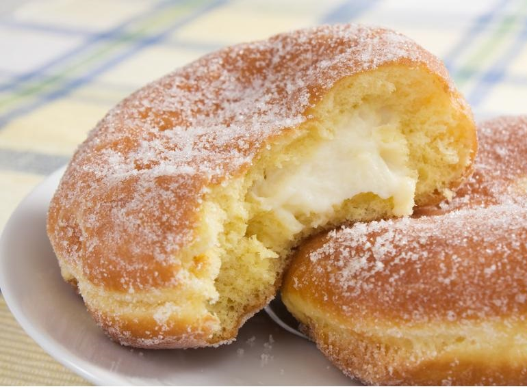
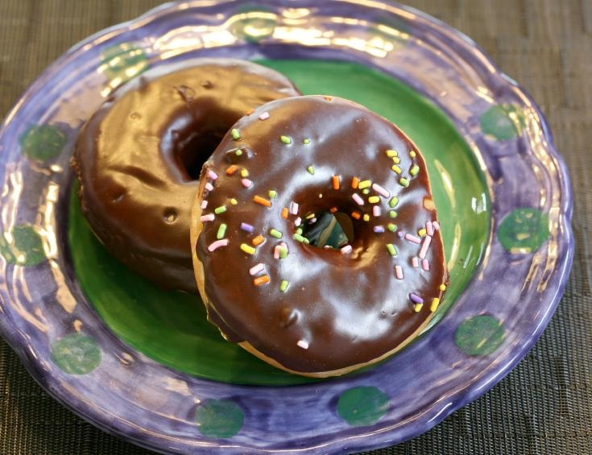

2 sobres de levadura
80 mililitros de agua tibia
1½ tazas de leche (360 mililitros)
75 gramos de manteca
55 gramos de azúcar
2 cucharaditas de sal
2 cucharaditas de nuez moscada
2 unidades de huevos batidos
4½ tazas de harina (630 gramos)
½ taza de mantequilla derretida Para la cobertura:
1 taza de azúcar (200 gramos)
1 cucharadita de canela en polvo
Para empezar con la preparación de los donuts coge un recipiente pequeño y disuelve la levadura en el agua tibia. Luego, en una cacerola mediana o al microondas, derrite la manteca con la leche y deja que se enfríe la mezcla. Después, vierte la mezcla de levadura y agua en otro recipiente aparte y añade, también, la mezcla de leche y manteca. El recipiente deberás ser grande porque es aquí donde elaborarás la masa de las donas caseras. Hecho esto, incorpora el azúcar, la sal, la nuez moscada, los huevos previamente batidos y dos tazas de harina. Reserva la harina restante y bátelo todo ligeramente hasta obtener una masa homogénea. Cuando los ingredientes anteriores de las donas caseras se hayan integrado por completo, añade la harina restante y bate hasta que la mezcla esté suave, sin grumos. Luego, deberás cubrir el recipiente con un paño limpio y dejar que la masa repose durante una hora para que doble su tamaño. Pasado el tiempo de reposo, coloca la masa sobre una superficie espolvoreada con un poco de harina y amásala unos segundos. Luego, extiende la masa con la ayuda de un rodillo y ya puedes empezar a crear tus donuts con un molde especial para ello o con tus propias manos. Ahora es el momento de meter las donas caseras al horno. Para ello, coloca los "donuts" sobre una plancha o bandeja de horno, previamente engrasada, dejando un espacio entre uno y otro de 5 centímetros aproximadamente. Ten en cuenta que aumentarán su volumen por lo que no pueden estar pegados entre ellos. Deja las donas caseras fáciles y rápidas reposar y crecer, sin cubrir, unos 20 minutos antes de hornear. Mientras tanto, precalienta el horno a 200cºC y mezcla en un recipiente el azúcar de la cobertura con la canela en polvo. Pasado el tiempo de reposo, hornea los "donuts" durante 10 minutos, o un poco más, hasta que tomen un color dorado. Cuando estén listos retíralos del horno y, con la ayuda de una brocha de cocina, unta en cada uno de ellos un poco de mantequilla derretida y, luego, pásalos por la mezcla de azúcar y canela. Puedes servirlos calientes o dejar que se enfríen para que endurezca un poco la cobertura.

Donas Rellenas
1 cucharada postre de Levadura en polvo
3 cucharadas de postre de Azúcar morena
2 cucharadas soperas de Aceite vegetal
2¼ tazas de Harina (315 gramos)
1 cucharadita de Sal
1 taza de Leche (240 mililitros)
Relleno
2 tazas de Leche (480 mililitros)
1 unidad de Huevo
5 unidades de Yemas de huevo
¼ taza de Almidón de maíz (31¼ gramos)
½ taza de Azúcar (100 gramos)
30 gramos de Mantequilla
1 cucharadita de Extracto de vainilla
Empezaremos a preparar la masa de las donas rellenas caseras calentando la leche hasta que esté tibia, luego mézclala con la levadura. Añade el aceite y el azúcar y mezcla bien todo. Cuando los ingredientes se hayan integrado por completo agrega la harina y la sal, y sigue mezclando para continuar con la elaboración de las donas rellenas de crema. Usa la batidora por 10 minutos a velocidad media y vacía la mezcla en una fuente engrasada. Tápala con un paño y deja reposar por 45 minutos aproximadamente, hasta que doble su tamaño y puedas dar forma a las rosquillas o donas con crema pastelera. Despliega la masa para donas rellenas sobre una superficie enharinada y estírala. Dale forma con las manos y córtala en porciones del tamaño que quieres que sean tus donas rellenas de crema pastelera. Luego, fríelas en aceite muy caliente por pocos minutos. Deben dorarse por ambos lados. Cabe destacar que nosotros no hemos realizado ningún agujero en el centro, pero si lo prefieres puedes hacerlo. Ahora prepara el relleno de crema pastelera para rellenar las donas. Primero, bate los huevos en un recipiente, agrega el almidón y el azúcar moreno hasta obtener una mezcla suave, integra bien todos los ingredientes y agrega por último la leche tibia. Lleva la mezcla al fuego y remueve de forma constante. Mantén la llama a un nivel medio y cuando la preparación espese retírala y sigue revolviendo por unos minutos más. or último, integra la mantequilla y la vainilla a la mezcla y continúa removiendo. Deja reposar la mezcla y luego utiliza una manga para rellenar las donas con crema pastelera. Puedes espolvorear azúcar glass y canela molida por encima simplemente o hacerles una cubierta de chocolate. Recuerda que puedes variar el relleno a tu gusto, puedes usar dulce de leche, mermeladas u otros.

Donas Glaseadas
280 gramos de harina todo uso
1 taza de azúcar (200 gramos)
1 huevo
2 cucharadas soperas de mantequilla
1 barra de chocolate
80 mililitros de leche (⅓ taza)
Coger un bol y mezclar la harina con el azúcar. Formar un volcán y en el centro incorporar la mantequilla derretida y el huevo. Mezclar bien. Añadir la leche y seguir mezclando suavemente hasta obtener una masa homogénea y lisa. Extender en la mesa enharinada la masa y realizar las donas con un molde especial, cortapastas, troquel o con las manos. Si no tienes molde, puedes cortar los círculos con la boca de un vaso y retirar el centro. Poner una sartén con abundante aceite al fuego y freír cada una de las donas sin levadura cuando esté caliente. Reservar sobre papel absorbente para retirar el exceso de grasa. Derretir el chocolate y pasar las donas para cubrirlas por encima, dejar endurecer y ¡listo! Ya tienes tus donas sin levadura caseras preparadas para comer. Si lo deseas, puedes preparar una cobertura de fresa para bañar algunas donas en ella.